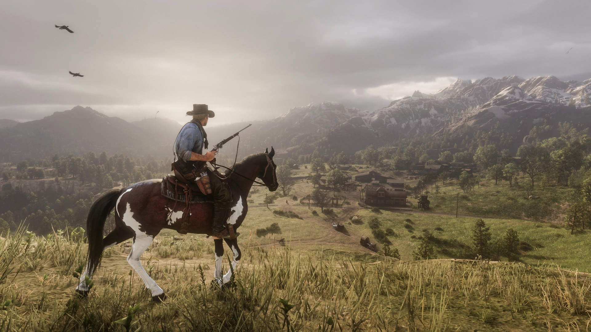

Red Dead Redemption 2
Гра чіпляє, тому що це «дітище» Rockstar з атмосферою «Дикого Заходу». Як і в GTA V, тут гарний сюжет та потужний мультиплеєр. Можна полювати на поганців, грабувати багатих на благо бідних і тікати від шерифів.

Red Dead поєднує у собі відкритий світ, сотні активностей, детально осмислений сюжет та сотні сторонніх місій. Саме тому гра в топ 10 найкращих ігор XXI століття. Щоб переконатися, посидіть з годинку в RDR 2.
S.T.A.L.K.E.R. 2: Heart of Chernobyl
Дата прем'єри: грудень 2023 року.
Чому її варто чекати:
- Гра передає безвихідь постапокаліптичного світу.
- Величезна кількість зброї — планується понад 30 видів вогнепальної.
- Динамічна зміна погоди та часу доби.

Продовження найбільш культової гри українського виробництва. Над цим проєктом багато років працювала студія GSC Game World, тому очікується, що кожна деталь гри буде виконана з любов'ю.
І якщо судити по доступній інформації, гравці зможуть поблукати відкритим безшовним світом (не потрібно буде сидіти чекати по 3-5 хвилин біля «екрану завантаження») так, ніби вони перенеслися до Прип'яті. Тут збережені ЧАЕС, село Новичок та більшість секретних об'єктів.
Гра так і залишиться шутером на виживання від першої особи. Щоб краще зрозуміти всі відсилання нової частини, краще перед цим пройти оригінальну трилогію. Усього гравцеві для дослідження буде доступно більше ніж 60 км, що можна порівняти з розміром обласного центру. Доведеться вибудовувати взаємини з випадковими перехожими та бути готовими до зустрічі з представниками різних банд та мутантів.